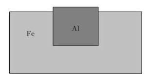
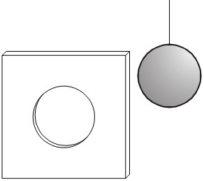
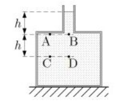

Fizka vsa prasanja iz kvizov
Fizika – Toplota in raztezanje
1. Kos aluminija vpnemo v železen okvir, kakor kaže slika. Kako se spremeni sila?
Kako se spremeni sila, s katero okvir stiska kos aluminija, ko se temperatura poveča?
Temperaturni koeficient dolžinskega raztezka za aluminij je 2,3×10⁻⁵ K⁻¹, za železo pa 2,3×10⁻⁵ K⁻¹.

- Sila se zmanjša.
- Sila se zmanjša na nič.
- Sila se poveča.
- Sila se ne spremeni.
🔹 Ključne besede: toplota, temperaturni raztezek, železo, aluminij, sila
2. Delavec dviguje vedro z maso 8 kg. V 9,0 s ga vzdigne za 4,0 m. S kolikšno močjo opravlja delo?
Delavec dviguje vedro z maso 8 kg. V 9,0 s ga vzdigne za 4,0 m. S kolikšno močjo opravlja delo?
🔹 Ključne besede: delo, 36W
3. Kolikšna je sprememba potencialne energije človeka z maso 50 kg, ki se povzpne za 22 m?
Kolikšna je sprememba potencialne energije človeka z maso 50 kg, ki se povzpne za 22 m?
🔹 Ključne besede: energija, potencialna energija, potencialna, 11kJ, sprememba
4. Plošča z luknjo je narejena iz aluminija (αAl=2,5⋅10⁻⁶K⁻¹), krogla pa iz jekla (αjeklo=1,2⋅10⁻⁶K⁻¹). Pri sobni temperaturi je notranji premer luknje nekoliko manjši od premera krogle. Kaj moramo storiti, da bo premer luknje v plošči enak premeru krogle?
Plošča z luknjo je narejena iz aluminija (αAl=2,5⋅10⁻⁶K⁻¹), krogla pa iz jekla (αjeklo=1,2⋅10⁻⁶K⁻¹). Pri sobni temperaturi je notranji premer luknje nekoliko manjši od premera krogle. Kaj moramo storiti, da bo premer luknje v plošči enak premeru krogle?

- Ohladiti ploščo in kroglo na 0 °C.
- Segreti kroglo.
- Ohladiti ploščo.
- Segreti ploščo.
🔹 Ključne besede: aluminij, jeklo, temperaturni raztezek, segrevanje, plošča, krogla
5. Z grelnikom dovajamo toploto vodi. Voda se segreje do vrelišča. Kaj se zgodi, če dovajamo toploto še naprej z enako močjo?
Z grelnikom dovajamo toploto vodi. Voda se segreje do vrelišča. Kaj se zgodi, če dovajamo toploto še naprej z enako močjo?
- Voda ostane v nespremenjenem stanju in njena temperatura se ne spreminja.
- Voda se začne spreminjati v paro in njena temperatura narašča.
- Voda se začne spreminjati v paro in njena temperatura se ne spreminja.
- Temperatura vode narašča nad temperaturo vrelišča.
🔹 Ključne besede: toplota, voda, para
7. V odprti cevki z obliko črke U sta voda in olje tako, kakor kaže slika. Oba kraka cevi sta odprta. Kaj velja za tlaka p1 in p2?
V odprti cevki z obliko črke U sta voda in olje tako, kakor kaže slika. Oba kraka cevi sta odprta. Kaj velja za tlaka p1 in p2?

- p1 < p2
- p1 > p2
- p1 = p2
- p1 = ρolje / ρvoda p2
🔹 Ključne besede: tlak, cev
8. Navor sile z ročico zapišemo z izrazom:
Navor sile z ročico zapišemo z izrazom:
🔹 Ključne besede: navor
9. Odprta steklenica, polna vode, stoji na ravni podlagi. Slika kaže obliko steklenice in lege štirih točk v steklenici, v katerih izmerimo tlak. Katera izjava je pravilna?
Odprta steklenica, polna vode, stoji na ravni podlagi. Slika kaže obliko steklenice in lege štirih točk v steklenici, v katerih izmerimo tlak. Katera izjava je pravilna?

- pA = pB
- pD = 2pC
- pA = 0
- pC = pB
🔹 Ključne besede: tlak, steklenica
10. Homogena klada deloma leži na mizi. V katerem primeru je sila, s katero klado zadržujemo v mirovanju, najmanjša?
Homogena klada deloma leži na mizi. V katerem primeru je sila, s katero klado zadržujemo v mirovanju, najmanjša?

🔹 Ključne besede: homogena klada, sila, mirovanje, navor